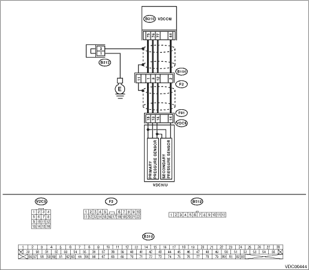

DTC DETECTING CONDITION:
Pressure sensor malfunction
TROUBLE SYMPTOM:
• ABS does not operate.
• VDC does not operate.
WIRING DIAGRAM:
• LHD model


• RHD model

| STEP | CHECK | YES | NO |
|
Are the acceleration pedal and brake pedal depressed simultaneously while driving? |
Erase the normal DTC for the VDC. NOTE: If the vehicle is driven while both the accelerator pedal and brake pedal are used, the DTC is sometimes stored in memory. |
|
|
|
Is the output value 0.6±0.12 V when the brake pedal is not depressed? |
|
Replace the VDCH/U. |
|
|
In the current diagnosis, is the same DTC displayed again? |
Replace the VDCCM. |
|
|
|
Are other DTCs displayed? |
Go to the diagnosis corresponding to the DTC. |
Temporary poor contact occurs. |